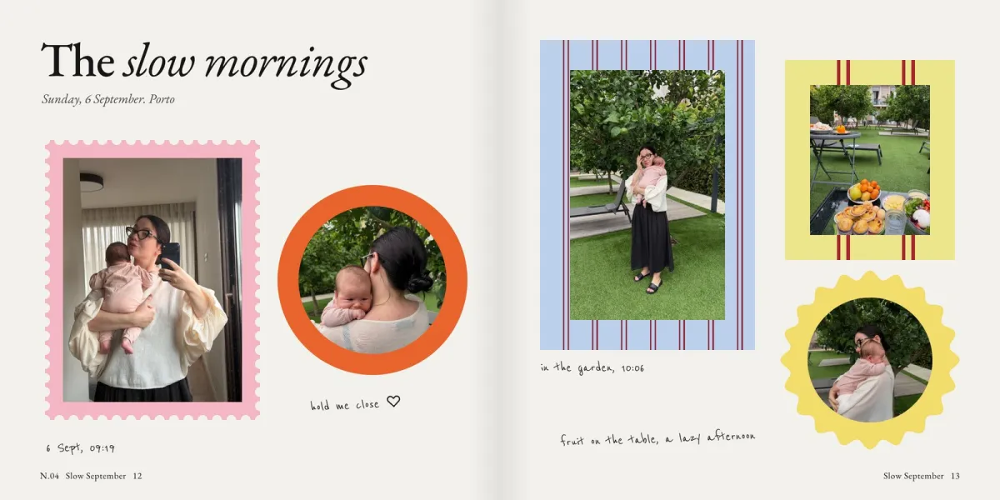

Season Photo Book for Teams, Schools, and Nonprofits
Updated Nov 2026 · by
Olga Miller, designer at ReMeet, 10 years in editorial design
I design season photo books for youth sports teams, school clubs, dance studios, church groups, and nonprofits. You share one album with your season's photos. I pick the best shots, organize by event, and design a book you can print for every member. One design fee ($29 or $79), then $69 per printed copy. First draft in 72 hours.
Who needs a season photo book
Any group that runs a "season" has the same problem. Hundreds of photos live on dozens of phones. Nobody has time to do anything with them. The season ends, and within a few months those photos are buried.

I've made season books for all kinds of organizations:
- Youth sports teams. Soccer, baseball, swimming, basketball, gymnastics. Parents want to remember the games, not just the trophies.
- School clubs and PTAs. Robotics club, drama productions, science fairs, field trips. A book captures what happened between September and June.
- Dance studios. Recitals, rehearsals, costume fittings, backstage candids. Dancers outgrow a season fast. The photos don't.
- Church and community groups. Retreats, service projects, fellowship events, holiday programs. These moments matter to families.
- Nonprofits. A season book shows donors what their money did. It works in grant applications, board reports, and thank-you packages.
The pattern is always the same. Someone has the photos. Nobody has the time. That's what I handle.
What to include in your book
The best season books follow a natural arc: beginning, middle, end. Here's what I look for when designing.
Group photos and portraits. A full team or class photo, ideally from early in the season. Individual shots of each member in uniform or costume. These anchor the book and give it a yearbook feel.
Action shots. Kids mid-kick. A dancer mid-leap. Students presenting at a science fair. You don't need a professional photographer. A parent with a phone in burst mode captures great action shots. Take more than you think you need.
Candid moments. These are the photos people love most. Kids laughing on the bench. A volunteer setting up chairs. The post-game snack circle. Two players stretching together. These capture culture, not just activity.
Awards and milestones. MVP trophies, certificates, promotions, end-of-year recognition. A simple page listing season highlights gives the book context. "Season record: 8-3-1. Goals scored: 42. Most improved: Jake."
Stats and results. For sports teams, I add standings tables and player stats if you send them. For schools, class lists or teacher notes. For nonprofits, impact numbers or participant quotes. Whatever data you have, I'll design it in.
End-of-season celebration. The banquet, recital, final performance, or awards night. This is the natural last chapter. Kids eating cake in their jerseys. Families together. The closing moment of the story.
Collecting photos from multiple people
This is the hardest part for most organizers. Photos live on twenty different phones. Here's what works:

- Create a shared Google Photos album at the start of the season. Name it something clear like "2026 Fall Season Photos." Share the link with every parent, coach, and volunteer.
- Send a reminder after every event. A quick group text: "Great game today! Add your photos to the shared album." People forget without a nudge.
- Set a deadline after the last event. Give everyone two weeks. Send one final reminder.
- Share the album link with me. I pull everything, sort by date, remove duplicates and blurry shots, and pick the strongest images for the layout.
If photos are on iCloud, Dropbox, or Google Drive, any of those links work too. I accept up to 5,000 photos per book. More photos means more to choose from.
Start your season book
Share your album link. I'll organize by event, design every page, and send a proof in 72 hours.
Start your book - from $29 →
Timeline: when to start
The ideal timeline starts during the season, not after.
| When | What to do |
|---|
| Start of season | Set up a shared album. Take team and individual portraits. Designate 2-3 parents as photographers. |
| Mid-season | Remind everyone to upload. Capture tournaments, performances, and special events. |
| Final event | Photograph the last game, recital, or gathering. Collect stats and results. |
| 1-2 weeks after | Gather quotes from coaches, teachers, or leaders. Share the full album with ReMeet. |
| 72 hours later | Review your proof. Request any changes (two rounds included). |
| End-of-season party | Hand out the books. Watch kids flip to their own pages first. |
Missed the "collect during the season" window? Don't worry. Send a group text asking everyone to share their best 20-30 photos. You'll have more than enough material within a few days.
Group ordering: one design, copies for everyone
This is what makes season books practical. I design one book, then you order a copy for every family, member, or donor.
The economics work well for groups. A 30-page book costs $29 to design. Each printed hardcover copy is $69. For a team of 12 families, that's $29 + (12 x $69) = $857, or about $71 per family. Compare that to custom trophies at $15-25 each that nobody keeps. The photo book costs more, but it's the thing families actually put on a shelf.
Some organizations fold the cost into registration fees. Others split it among families at the end. Nonprofits sometimes use program budgets or sponsor funds. However you fund it, the per-family cost is predictable.
Pricing
| What you get | Price |
|---|
| Designed PDF, up to 30 pages | $29 |
| Designed PDF, up to 100 pages | $79 |
| Printed hardcover | From $69 after approval |
| Printed premium layflat | From $129 after approval |
| Extra printed copy | $69 |
| Shipping (US, Canada) | Included |
| Shipping (Europe) | +$15 |
A typical season with 200-400 photos fits well in 30 pages. If your season spans a full year or you want every event covered, go with 100 pages ($79) for breathing room. More about what's included.
How ReMeet handles multi-source collections
Collecting photos from a group is messy. Different phones, different quality, different angles of the same moment. Here's how I handle it:
- I pull from your shared album (Google Photos, iCloud, Drive, Dropbox).
- The AI sorts through duplicates, blurry shots, and near-identical angles.
- I pick the strongest images and organize them by event and date.
- Every member gets represented. I check that no one is missing from the final layout.
- You review the proof and request changes. Two revision rounds are included.
The person who volunteers to organize the book doesn't need to sort, crop, or arrange anything. They just collect the album link and share it with me. Everything else is handled.
Making it a tradition
The best part of a season book is what happens the second year. Parents start taking better photos. The shared album fills up faster. Kids pose for action shots on purpose. By year three, you have a small collection on the shelf that shows how the group grew together.
Some teams include the book in their annual budget alongside jerseys and equipment. Schools rotate the responsibility among parent volunteers. Nonprofits use the book as a year-end deliverable for donors. However you structure it, the key is making it repeatable. One good system that runs every season without heroic effort from any single person.
Frequently asked questions
How many copies can we order?
As many as you need. I design the book once. You order printed copies at $69 each, shipped to one address or multiple. There's no minimum and no maximum.
Can multiple people contribute photos?
Yes. Set up a shared Google Photos album and invite every parent, coach, or volunteer who took photos. I pull from the album, pick the best shots, and remove duplicates. This works whether you have five contributors or fifty.
Do you include sponsor or donor logos?
Yes. Send me any logos and I'll add them to a sponsors page or the back cover. This counts as one of your revision requests. Nonprofits often use this for grant reports too.
What if our season spans the whole year?
The 100-page option ($79 design) fits a full year of events comfortably. For 200-500 photos from an entire season, that gives you about 3-5 photos per spread with room for captions and section headers.
Can we use the book in grant applications or board reports?
Absolutely. The PDF is high resolution and works in grant attachments and board presentations. Some organizations print an extra copy just for their grant files.
Turn your season into a book
Share your photos. I'll design a professional photo book in 72 hours. Order one copy or one for every family.
Start your season book →